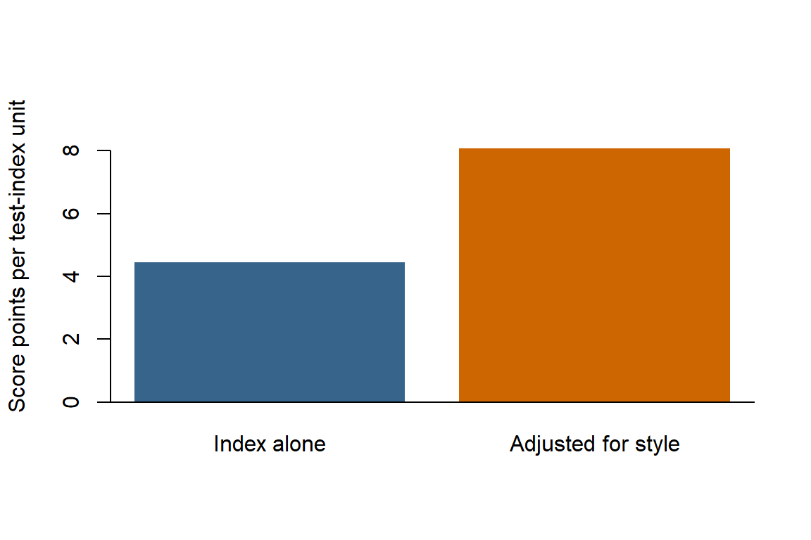

Can a variable with almost no correlation with an outcome still help predict it? A suppressor variable can strengthen another predictor’s contribution by accounting for variation in that predictor that is unrelated to the outcome. Here we demonstrate this pattern using synthetic data and only base R.
32.1 Generate Example Data
These are synthetic measurements for 120 students, not results from an actual study. We deliberately construct a test_index that mixes subject knowledge with an unrelated response-style component. The outcome, score, depends on knowledge plus random noise, but not on response style.
Each row represents one student. rnorm() draws normally distributed values, and set.seed() makes the random draws reproducible. Knowledge and response style are generated independently, with mean 0 and standard deviation 1 in the population. Their sample correlation need not be exactly zero.
The test_index is an arbitrary numeric index, not a standardized test score. We retain response style as a measured predictor but leave knowledge out of the fitted models: the point is to see how the two observed predictors work together.
32.2 Inspect the Correlations
cor() calculates the pairwise Pearson correlations. round() changes only their displayed precision.
The test index correlates with the outcome (0.72). Response style correlates with the test index (0.69) but has little correlation with the outcome (0.04). This is the pattern we built into the data: response style contributes to the index without contributing to the score-generation rule.
32.3 Compare Two Regression Models
First predict scores using the test index alone. Then add response style. In an R formula, ~ separates the outcome from its predictors, and + includes both predictors without an interaction.
Code
simple_model<-lm(score~test_index, data =students)suppression_model<-lm(score~test_index+response_style, data =students)round(coef(simple_model), 2)
lm() fits each model, and coef() extracts its named coefficient estimates. Compare the test_index coefficients using the same students and the same measurement units:
Code
simple_slope<-coef(simple_model)[["test_index"]]adjusted_slope<-coef(suppression_model)[["test_index"]]style_slope<-coef(suppression_model)[["response_style"]]comparison<-data.frame( model =c("Test index only", "Test index + response style"), test_index_slope =c(simple_slope, adjusted_slope), r_squared =c(summary(simple_model)$r.squared,summary(suppression_model)$r.squared), residual_sd =c(sigma(simple_model), sigma(suppression_model)))comparison[-1]<-round(comparison[-1], 2)comparison
model test_index_slope r_squared residual_sd
1 Test index only 4.45 0.52 6.02
2 Test index + response style 8.07 0.90 2.71
summary() supplies \(R^2\), the proportion of sample outcome variation explained by the model. sigma() supplies the residual standard deviation, in score points. The [["test_index"]] expressions retrieve that predictor’s coefficient by name; comparison[-1] selects the numeric columns for rounding.
Quantity
Interpretation
Test-index slope, alone
One additional index unit is associated with 4.45 additional predicted score points.
Test-index slope, adjusted
Holding response style constant, one additional index unit is associated with 8.07 additional predicted score points.
Response-style slope, adjusted
Holding the test index constant, one additional response-style unit is associated with a -7.75-point change in predicted score.
Adding response style makes the positive test-index coefficient larger, increases \(R^2\), and reduces the residual standard deviation. An increase in \(R^2\) alone is not evidence of suppression: adding a predictor cannot decrease ordinary in-sample \(R^2\). Here the coefficient change and correlation pattern are the important additional evidence.
32.4 See the Coefficient Change
Both bars describe the same test-index unit, but they answer different questions: the first is an unadjusted association, and the second holds response style constant.
Code
barplot(c(simple_slope, adjusted_slope), names.arg =c("Index alone", "Adjusted for style"), col =c("steelblue4", "darkorange3"), ylim =c(0, max(simple_slope, adjusted_slope)*1.15), ylab ="Score points per test-index unit", border =NA)abline(h =0)

Why does this happen? In our construction, test_index - response_style equals knowledge. The second predictor lets the model account for the response-style component that obscures the knowledge-score association. In the population, the index-only slope is 4; including response style gives slopes of 8 for the index and -8 for response style. The fitted values differ because this is a finite sample with random noise.
The negative response-style coefficient does not mean response style causes lower scores. At a fixed test index, a larger response-style component implies less knowledge in this constructed example. Its conditional association can therefore be negative even when its marginal correlation with the outcome is near zero.
This illustrates classical suppression: the suppressor is uncorrelated with the outcome in the population but improves another predictor’s contribution. Other forms of suppression need not have a zero marginal correlation. A variable’s role depends on the other predictors and the outcome, so screening predictors solely by their individual outcome correlations can miss this pattern.
These are in-sample associations, not evidence of causality or guaranteed improvement on new students. The bars show point estimates; confint(suppression_model) gives coefficient confidence intervals under the model’s assumptions. Real applications also require substantive justification for including a variable, model diagnostics, and assessment on new or held-out data.
# Suppressor Variables in Regression {#sec-example-statistical-suppression}Can a variable with almost no correlation with an outcome still help predict it? A **suppressor variable** can strengthen another predictor's contribution by accounting for variation in that predictor that is unrelated to the outcome. Here we demonstrate this pattern using synthetic data and only base R.## Generate Example DataThese are synthetic measurements for 120 students, not results from an actual study. We deliberately construct a `test_index` that mixes subject knowledge with an unrelated response-style component. The outcome, `score`, depends on knowledge plus random noise, but not on response style.```{r}#| label: ex-suppression-dataset.seed(2026)knowledge <-rnorm(120)response_style <-rnorm(120)students <-data.frame(test_index = knowledge + response_style,response_style = response_style,score =70+8* knowledge +rnorm(120, mean =0, sd =3))head(students)```Each row represents one student. `rnorm()` draws normally distributed values, and `set.seed()` makes the random draws reproducible. Knowledge and response style are generated independently, with mean 0 and standard deviation 1 in the population. Their sample correlation need not be exactly zero.The `test_index` is an arbitrary numeric index, not a standardized test score. We retain response style as a measured predictor but leave `knowledge` out of the fitted models: the point is to see how the two observed predictors work together.## Inspect the Correlations`cor()` calculates the pairwise Pearson correlations. `round()` changes only their displayed precision.```{r}#| label: ex-suppression-correlationscorrelations <-cor(students)round(correlations, 2)```The test index correlates with the outcome (`r round(correlations["test_index", "score"], 2)`). Response style correlates with the test index (`r round(correlations["response_style", "test_index"], 2)`) but has little correlation with the outcome (`r round(correlations["response_style", "score"], 2)`). This is the pattern we built into the data: response style contributes to the index without contributing to the score-generation rule.## Compare Two Regression ModelsFirst predict scores using the test index alone. Then add response style. In an R formula, `~` separates the outcome from its predictors, and `+` includes both predictors without an interaction.```{r}#| label: ex-suppression-modelssimple_model <-lm(score ~ test_index, data = students)suppression_model <-lm(score ~ test_index + response_style, data = students)round(coef(simple_model), 2)round(coef(suppression_model), 2)````lm()` fits each model, and `coef()` extracts its named coefficient estimates. Compare the `test_index` coefficients using the same students and the same measurement units:```{r}#| label: ex-suppression-comparisonsimple_slope <-coef(simple_model)[["test_index"]]adjusted_slope <-coef(suppression_model)[["test_index"]]style_slope <-coef(suppression_model)[["response_style"]]comparison <-data.frame(model =c("Test index only", "Test index + response style"),test_index_slope =c(simple_slope, adjusted_slope),r_squared =c(summary(simple_model)$r.squared,summary(suppression_model)$r.squared ),residual_sd =c(sigma(simple_model), sigma(suppression_model)))comparison[-1] <-round(comparison[-1], 2)comparison````summary()` supplies $R^2$, the proportion of sample outcome variation explained by the model. `sigma()` supplies the residual standard deviation, in score points. The `[["test_index"]]` expressions retrieve that predictor's coefficient by name; `comparison[-1]` selects the numeric columns for rounding.| Quantity | Interpretation || ---| ---|| Test-index slope, alone | One additional index unit is associated with `r round(simple_slope, 2)` additional predicted score points. || Test-index slope, adjusted | Holding response style constant, one additional index unit is associated with `r round(adjusted_slope, 2)` additional predicted score points. || Response-style slope, adjusted | Holding the test index constant, one additional response-style unit is associated with a `r round(style_slope, 2)`-point change in predicted score. |Adding response style makes the positive test-index coefficient larger, increases $R^2$, and reduces the residual standard deviation. An increase in $R^2$ alone is not evidence of suppression: adding a predictor cannot decrease ordinary in-sample $R^2$. Here the coefficient change and correlation pattern are the important additional evidence.## See the Coefficient ChangeBoth bars describe the same test-index unit, but they answer different questions: the first is an unadjusted association, and the second holds response style constant.```{r}#| label: ex-suppression-plot#| fig-width: 6#| fig-height: 4#| fig-alt: "Two bars compare the test-index coefficient; the coefficient is larger after adjusting for response style."barplot(c(simple_slope, adjusted_slope),names.arg =c("Index alone", "Adjusted for style"),col =c("steelblue4", "darkorange3"),ylim =c(0, max(simple_slope, adjusted_slope) *1.15),ylab ="Score points per test-index unit",border =NA)abline(h =0)```Why does this happen? In our construction, `test_index - response_style` equals `knowledge`. The second predictor lets the model account for the response-style component that obscures the knowledge-score association. In the population, the index-only slope is 4; including response style gives slopes of 8 for the index and -8 for response style. The fitted values differ because this is a finite sample with random noise.The negative response-style coefficient does **not** mean response style causes lower scores. At a fixed test index, a larger response-style component implies less knowledge in this constructed example. Its conditional association can therefore be negative even when its marginal correlation with the outcome is near zero.This illustrates **classical suppression**: the suppressor is uncorrelated with the outcome in the population but improves another predictor's contribution. Other forms of suppression need not have a zero marginal correlation. A variable's role depends on the other predictors and the outcome, so screening predictors solely by their individual outcome correlations can miss this pattern.These are in-sample associations, not evidence of causality or guaranteed improvement on new students. The bars show point estimates; `confint(suppression_model)` gives coefficient confidence intervals under the model's assumptions. Real applications also require substantive justification for including a variable, model diagnostics, and assessment on new or held-out data.For syntax, see the [R documentation for `lm()`](https://stat.ethz.ch/R-manual/R-devel/library/stats/html/lm.html). For the methodological distinction between suppression, mediation, and confounding, see [MacKinnon, Krull, and Lockwood (2000)](https://doi.org/10.1023/A:1026595011371).